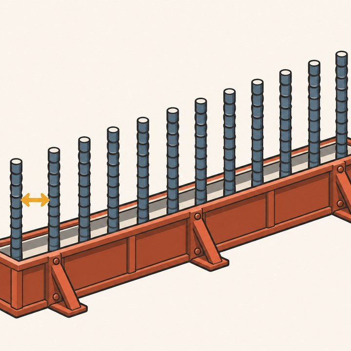

iPhone・iPad・Android の鉄筋の拾い出し
本数は、ピッチ以下で。
部材ごとの重さと、定尺の発注まで。
図面から鉄筋の数量を拾い出す、配筋の計算アプリです。部材ごとに鉄筋の行（径・ピッチか本数・切寸）を足すと、間隔がピッチを超えないように切り上げた本数と、JIS の単位質量で重さが出ます。現場の集計では、径ごとの重さと、定尺を何本頼むか（端材・歩留まり）まで出します。
App Store・Google Play で配信予定買い切りで全部の機能が使え、アプリ内課金・サブスクリプション・広告はありません。

こんな困りごとのために
本数が1本足りない
「配置長 ÷ ピッチ」を切り捨てると、間隔がピッチを超えます（1000 を @300 なら 4 本・間隔 333）。ひろいだしは切り上げて 5 本・間隔 250 と出します。
同じ部材がいくつもある
部材に「同じ部材の数（× 箇所）」を入れると、本数・総長・重さにかけて出します。
重さの単位質量を調べ直す
JIS G 3112 の異形棒鋼（D6〜D41）の単位質量を中に持っているので、径を選ぶだけです。
定尺から何本切れるか分からない
径ごとに定尺（3.5〜12 m）を選ぶと、切寸の長い順に詰めて、発注の本数・端材・歩留まりを出します。定尺より長い切寸は「継手が要る」と出します。
できること
| 鉄筋の行 | 径（D6〜D41）・ピッチで（配置長・ピッチ・両端／片端／両端なし）か本数で・切寸・メモ |
|---|---|
| 出す値 | 1部材の本数・実際の間隔・合計本数（× 箇所）・総長・重さ |
| 現場の集計 | 径ごとの本数・総長・重さ・合計の t・定尺の発注（本数・端材・歩留まり・継手が要る本数） |
| まとめ方 | 現場 → 部材 → 鉄筋の行・字の大きさ（3段） |
| データ | 拾い出しの CSV・iCloud Drive の毎日の控え・控えのファイル・ゴミ箱（30日）・アカウントなし・解析と広告なし |
計算は入れた寸法をもとにした目安です。最終的な配筋や数量は、図面・仕様書・施工条件で確かめてください。
使い方・プライバシーポリシー・利用規約もご覧ください。